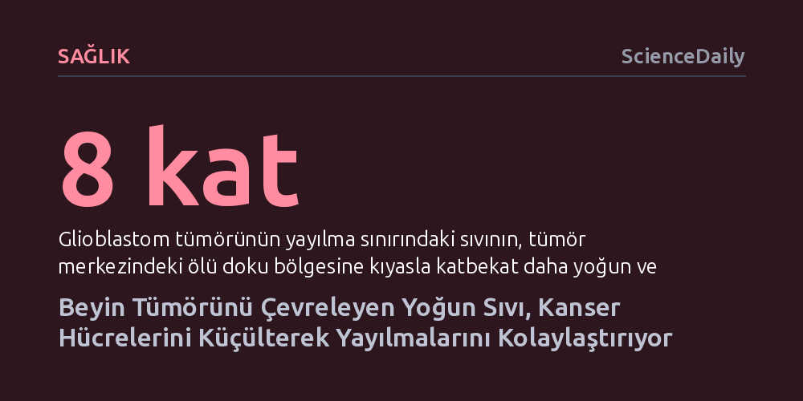

SAGLIK · ScienceDaily · 2026-10-25
Glioblastom tümörünün çevresindeki yoğun ve yapışkan sıvı, kanser hücrelerini yavaşlatmak yerine küçülterek dar doku aralıklarından daha hızlı sızmalarını sağlıyor. Üstelik hücreler bu mekanik hafızayı koruyarak akışkan ortama döndüklerinde bile agresif ve istilacı kalmayı sürdürüyor.
Kanser araştırmalarında bugüne kadar büyük oranda ihmal edilen tümör sıvısı yoğunluğunun, hücreleri durdurmak bir yana onları daha ölümcül kılan kalıcı bir mekanik uyuma sürüklediğini gösteriyor.

En ölümcül beyin kanserlerinden biri olan glioblastom, sağlıklı dokulara hızla yayılarak cerrahi müdahaleleri ve tedavileri boşa çıkarmasıyla bilinir. Bugüne dek kanser araştırmaları ağırlıklı olarak tümörün yayılmasını tetikleyen kimyasal sinyallere ve tümör çevresindeki katı doku sertliğine odaklanmıştı. Ancak tümörün hemen kıyısındaki sıvı ortamın fiziksel nitelikleri büyük ölçüde gözden kaçırılmıştı.
Araştırmacılar, glioblastomun çevre dokuya doğru ilerleyen dış çeperindeki sıvının, tümör merkezindeki ölü doku sıvısına kıyasla yaklaşık sekiz kat daha koyu ve yapışkan olduğunu belirledi. Normal koşullarda bu denli yüksek viskoziteli bir sıvının hücrelerin hareketini zorlaştırıp onları yavaşlatması beklenirdi. Oysa bulgular, kanser hücrelerinin bu yoğun ortama teslim olmak yerine, engeli aşmak için şaşırtıcı bir biçimde yeniden şekillendiğini gösteriyor.
Hücrelerin akışkanlık direncine verdiği uzun vadeli tepkileri laboratuvarda gözlemlemek geleneksel kapalı mikroakışkan kanallarla mümkün olmuyordu; çünkü dar tüpler oksijen ve besin akışını kısıtlıyor, kanal çeperine sürtünme ise ölçümleri bozuyordu. Chongqing Üniversitesi ve Chongqing Genel Hastanesi'nden araştırmacılar, bu kısıtları aşmak amacıyla iki katmanlı ve çıkarılabilir kapaklı bir açık mikroakışkan platform tasarladı. Mikro sütunlarla donatılan bu düzenek, hücrelerin bir ay boyunca kesintisiz beslenip hareket etmesine imkân tanıdı.
Deneylerde iki farklı insan glioblastom hücre hattı (U-251 ve LN-229), tümör çeperindeki viskoziteyi taklit eden yoğun bir sıvı içerisinde bir ay boyunca kültüre alındı. Süreç boyunca hücrelerin yoğun sıvı direnci altında hacimce küçüldüğü, daha esnek bir yapı kazandığı ve mikro sütunlar arasındaki dar yarıklardan çok daha kolay kıvrılarak geçtiği saptandı. Hatta hücre çekirdekleri belirgin şekilde bükülürken, fiziksel kuvvetleri algılayan kritik sinyal proteini YAP'ın çekirdekte yoğunlaştığı gözlendi.
Çalışmanın en dikkat çekici yanı, hücrelerin bu ortamdan çıkarıldıktan sonraki davranışları oldu. Yoğun sıvıdan alınıp yeniden normal akışkanlıktaki ortama yerleştirilen glioblastom hücreleri, eski hallerine dönmek yerine küçülmüş gövdelerini, yüksek hareket hızlarını ve esnekliklerini korudu. Bu tablo, hücrelerin geçmişte maruz kaldıkları fiziksel strese dair bir tür 'mekanik hafıza' geliştirdiğini kanıtlıyor.
Öte yandan her iki hücre hattı aynı fiziksel çevikliğe ulaşsa da altta yatan moleküler mekanizmaların farklı olduğu ortaya çıktı. U-251 hücreleri CD44, FN1 ve MMP9 gibi doku istilasını yöneten genleri aktif hale getirerek mezenkimal benzeri bir yeniden programlamaya girdi. Buna karşılık LN-229 hücreleri, benzer genetik değişimler göstermeksizin yalnızca hücresel iskelet esnekliğini artırarak aynı sonuca ulaştı. Bu ayrım, glioblastomun ölümcül yayılma becerisini birden fazla biyolojik rota üzerinden kazanabildiğini belgeliyor.
Bu bulgular, glioblastom tedavisinde bugüne dek karşılaşılan yüksek direncin fiziksel kökenlerine ışık tutuyor. Tümör sıvısının koyulaştığı bölgeler, adeta doğal bir seçilimle en esnek ve en saldırgan hücrelerin çoğalmasını teşvik ediyor. Dolayısıyla gelecekteki terapilerin yalnızca biyokimyasal hedeflere değil, YAP sinyal yolağına ve hücre iskeletinin yeniden yapılanmasını engelleyen mekanik müdahalelere odaklanması gerektiği anlaşılıyor.
Üstelik araştırmacıların geliştirdiği açık mikroakışkan çip, standart laboratuvar plakalarına doğrudan entegre edilebiliyor. Hücrelerin tıkanma yaşamadan uzun süre mikroskop altında izlenmesine olanak tanıyan bu platform, kanserin mekanik adaptasyonunu durduracak yeni ilaç adaylarının taranmasında pratik ve güçlü bir araç sunuyor.